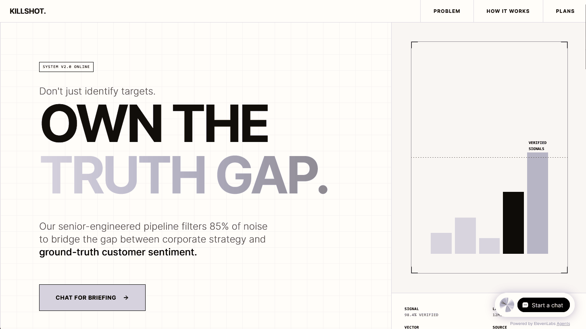
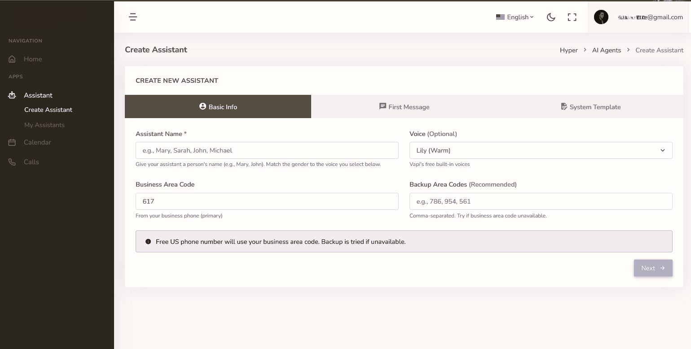

Enrique
Bruzual
Principal AI Solutions Architect
Driving Strategic Intent through Production-Grade Architecture and AI Orchestration. I build resilient, intent-driven systems that bridge the gap between high-level business logic and scalable AI execution.
Core Competencies.
Strategic AI
Architecting high-fidelity intelligence pipelines that bridge complex business logic with generative multi-agent systems.
System Architecture
Designing resilient, high-availability multi-tenant backends engineered for secure, production-grade traffic.
Full-Stack Logic
Precision integration of high-performance frontends with complex asynchronous backend data processing.
Tech Leadership
Mentoring engineering teams through years of architectural wisdom and technical roadmapping.
Selected Projects.

KillShot: Strategic Intelligence Engine
A high-fidelity analytics platform designed for real-time strategic decision making. Leveraging predictive modeling to forecast market trends with 85% accuracy.
- Python
- pgvector
- HTMX/AplineJS
AI-Powered Voice Scheduling
A production-grade, multi-tenant SaaS platform utilizing Model Context Protocol (MCP) to bridge conversational voice agents with secure, tenant-isolated Django scheduling backends.
- Python
- Django
- MCP-Server
- LLM-integration

Technical Insights.
Three Decades of Bridging
High-Fidelity Design and Machine Logic.
I have spent over 30 years refining how humans interact with complex systems, evolving from early digital architecture for major media outlets to leading deep R&D initiatives in robotics and CNC automation.
Whether developing custom hardware-software interfaces during startup phases and academic tenure, or orchestrating multi-agent AI pipelines for enterprise SaaS, my philosophy remains the same: technology must be the high-fidelity bridge between strategic ambition and executable reality.